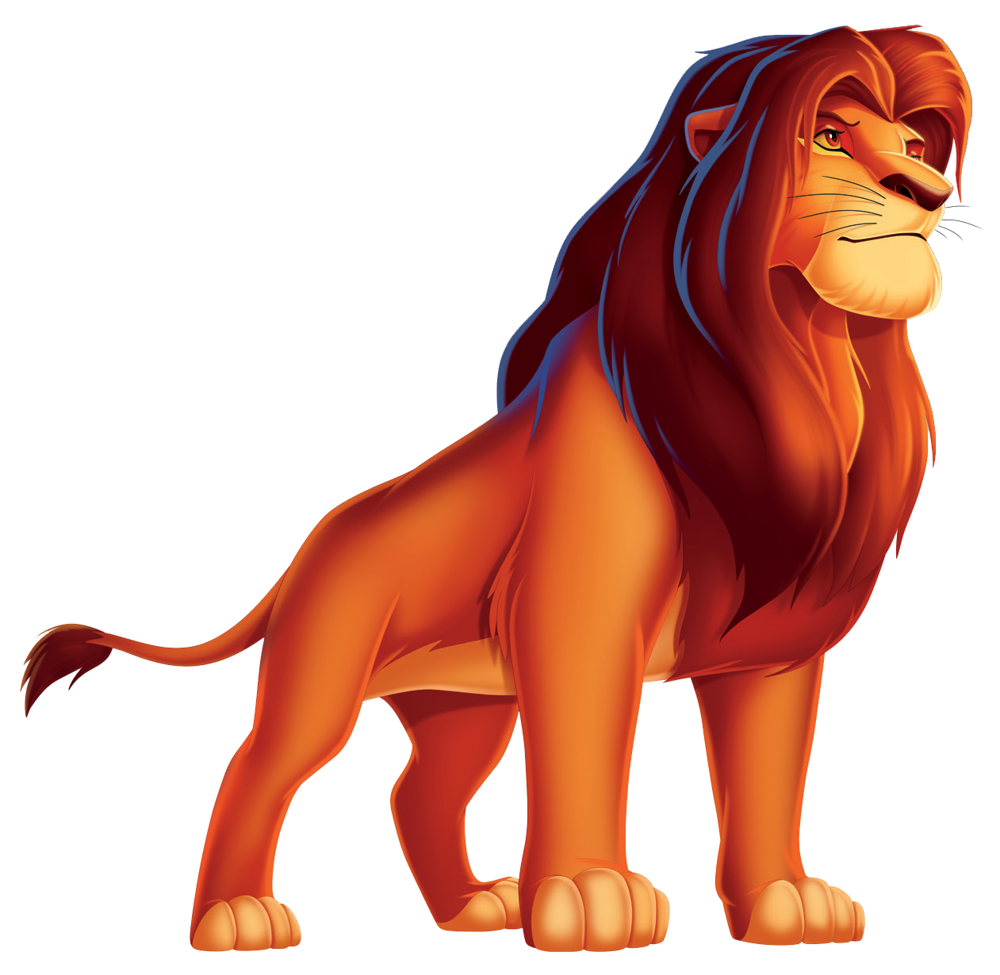
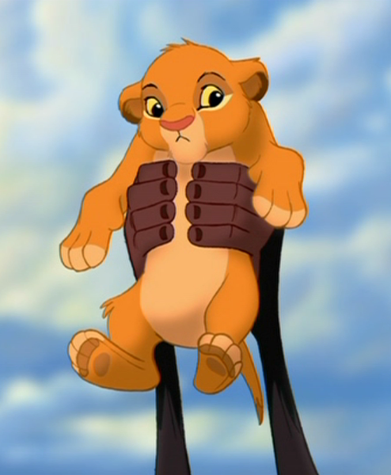
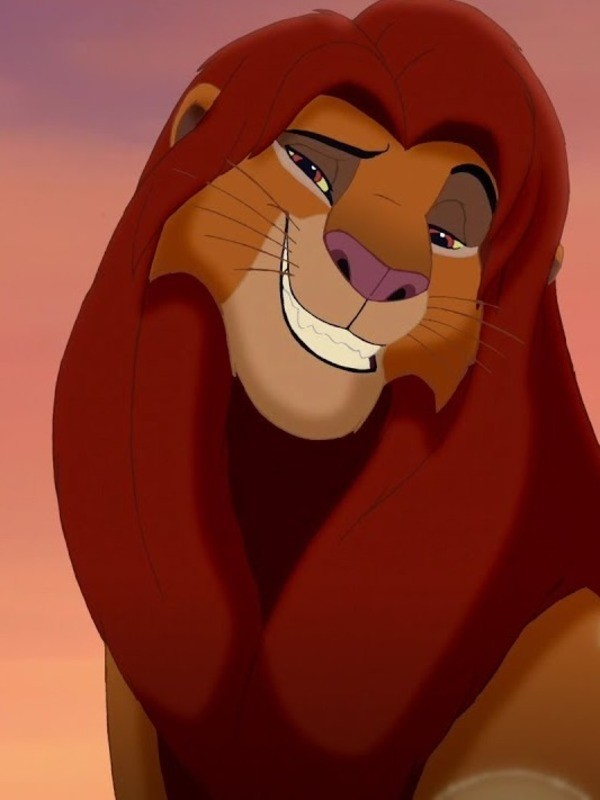
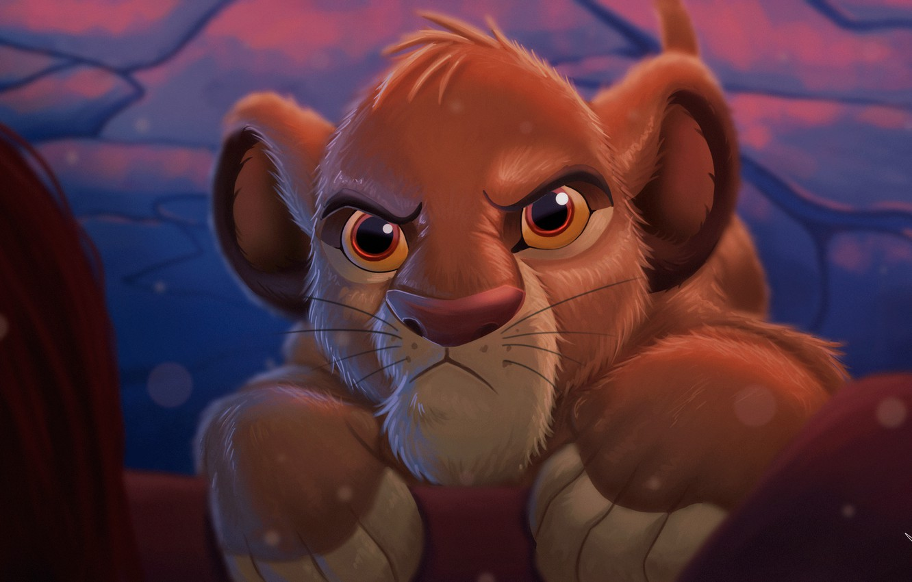

|
|
Сибма
Навигация
Симба — сын Короля-льва Муфасы и королевы Сараби, племянник Шрама. В детстве был неугомонным и любопытным львёнком, из-за чего часто попадал в неприятности. После внезапной смерти отца львёнок был вынужден покинуть родное королевство. За пределами родины львёнка приютили и воспитали сурикат Тимон и бородавочник Пумба, и бок о бок с ними беглый юный принц живёт беззаботную и лёгкую жизнь. Став взрослым, Симба встречается с духом погибшего отца, убедившего его в истинном предназначении. Прозревшему и разобравшемуся в себе принцу предстояло вернуться и спасти Земли Прайда от окончательного упадка.

Принц растёт жизнерадостным, неугомонным, время от времени надменным львёнком. Он хочет поскорее стать королём, ибо считает, что этот титул даёт право делать, что хочется и идти куда угодно. Корыстный и жестокий дядя Шрам, которого племянник одним фактом своего появления лишил права занять заветный трон, решает воспользоваться любознательностью Симбы и намеренно рассказывает ему про кладбище слонов — землю, находящуюся за границей королевства Муфасы и населённую голодными гиенами — приспешниками Шрама. Симба отправляется туда вместе со своей подругой Налой. Там на львят нападают подосланные Шрамом гиены. К счастью, Симбу и Налу успевает спасти вовремя подоспевший Муфаса.
То, что Симба пошёл в запрещённое место и вдобавок подверг Налу опасности, очень расстраивает его отца. После этого инцидента отец отчитывает сына, говорит, что смелым нужно быть только тогда, когда это необходимо. Также Муфаса говорит с Симбой о звёздах, рассказывая, что там живут великие Короли прошлого — их предки, следящие с небес за жизнью.



Семья
Характеристика
| Имя | Симба |
| Животное | лев |
| Пол | мужской |
| Грива | темно-красная |
| Тип персонажа | положительный |
| Характер | Смелый, весёлый, упрямый, понимающий, героический, мужественный, надёжный, уверенный, добрый. |
| Внешний вид | Золотой мех, светло-жёлтые морда, подбрюшье и лапы, розовый нос, жёлтые белки глаз |
| Цель | Занять законное место на троне, свергнув злого дядю, защищать королевство от врагов |
| Силы и способности | Физическая сила, скорость и ловкость |
| Оружие | Рык, клыки, когти |
| Судьба | Вернулся на Земли Прайда, стал новым королём |
Видео
| Симба | Муфаса | Сараби | Шрам |
|
|
|||
| Все используемые материалы взяты с Википедии | Kiber One, 2019 | ||